Let
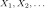
be independent, identically distributed and square-integrable, with mean and variance
and variance 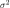
, and let . Then in
probability: for every
. Then in
probability: for every  ,
,
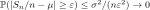
.By linearity
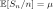
, and by independence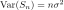
, so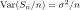
. Chebyshev's inequality applied to gives the displayed bound,
which tends to
gives the displayed bound,
which tends to  .
.
Let be independent, identically distributed with
and mean . Then
almost surely.
Replacing
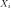
by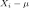
, which preserves independence and the fourth-moment hypothesis, assume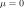
.Expand
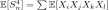
over all quadruples of indices. If some index occurs exactly once, the corresponding factor is independent of the rest, so the expectation factors and vanishes because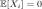
. The surviving terms are those with all four indices equal – there are of them, each
of them, each
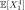
– and those splitting into two pairs, of which there are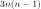
, each equal to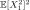
by independence. Hence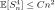
for a constant depending only
on the law.
depending only
on the law.
By Markov's inequality applied to
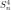
, for every
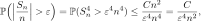
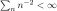
. The corollary to the first Borel-Cantelli lemma then gives almost surely.
Let  be independent events all of the same probability
be independent events all of the same probability
 , and let be the number of the first that occur.
Then
, and let be the number of the first that occur.
Then
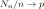
almost surely.The indicators
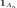
are independent by the proposition on functions of independent variables, identically distributed, bounded and hence with finite fourth moment, and their common mean is. Their partial sums are , so the strong
law applies.
The fourth moment is a convenience, not a necessity: Kolmogorov's strong law needs only integrability, and Etemadi's proof needs only pairwise independence. What is not a convenience is the distinction between the two laws. The weak law says nothing about any single sequence of outcomes; the strong law says that the set of outcomes along which the averages fail to converge is null, which is the statement that justifies reading a long run of measurements as an estimate.